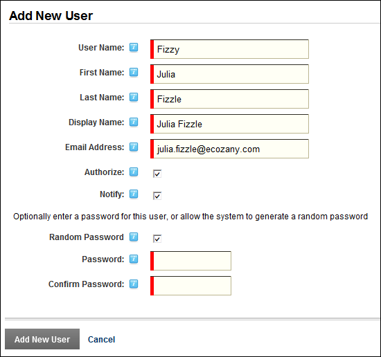

Adding a SuperUser Account
How to add new SuperUser account to the site using the SuperUser Accounts module. Note: Usernames are unique and cannot be changed. If you attempt to save a user account using an existing username the following message is displayed: "A User Already Exists For the Username Specified. Please Register Again Using A Different Username." In this scenario you should change the username and retry saving the new account.
- Navigate to Host > Advanced Settings >
 SuperUser Accounts.
SuperUser Accounts.
- Click the Add New User button. This opens the Add New User page.
- In the User Name text box, enter a user name. Note: Only letters and numbers can be entered.
- In the First Name text box, enter the person's first name.
- In the Last Name text box, enter the person's last name.
- In the Display Name text box, enter the name to be displayed to other site members.
- In the Email Address text box, enter a valid email address.
- At Authorize, select from the following options:
- Mark
 the check box if the user is authorized to access the site. This will automatically provide access to the SuperUser role.
the check box if the user is authorized to access the site. This will automatically provide access to the SuperUser role. - Unmark
 the check box if the new user is not yet authorized to access the site. A SuperUser must authorize this account at a later date.
the check box if the new user is not yet authorized to access the site. A SuperUser must authorize this account at a later date.
- At Notify, select from the following options:
- Mark the check box to send a notification email to the SuperUser's email address. This is the default setting.
- Unmark the check box if you don't wish to send notification. If the account is not authorized, you may like to send the notification at a later time.
- To create the user's password, select from these options:
- Mark the check box at Random Password to generate a random password
- To create a password manually:
- Unmark the check box at Random Password.
- In the Password text box, enter a password.
- In the Confirm Password text box, re-enter the same password. Note: The site may be set to required unique passwords. In this case, choose a new password, or opt for a random password.

- Click the Add New User button.